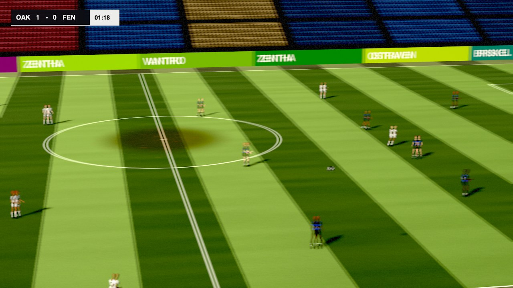
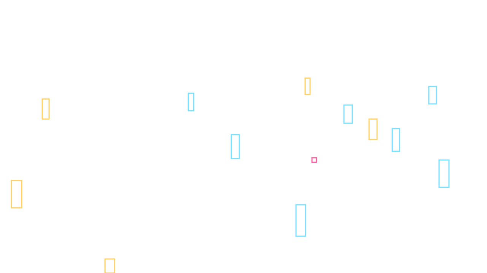

AI that watches the match, logs every event, and describes it to every fan, including the ones who can't see it.
An entry for the Microsoft x Premier League Inside the Game developer hackathon (The Synthetic Match Insights Engine for Premier League Studio). We start one step earlier than an event feed: from video. A detector watches a synthetic broadcast, a team of agents explains what happened, a fact-checking agent rejects any claim the data does not support, and the result is drawn back onto the footage for each kind of fan.
Every club, player, kit and match here is synthetic, made by our own match engine and renderer. This page describes what runs today; anything not built is marked planned or in progress, and every number links to the report it comes from.


ninety-render --seed 7, frame 1970).
The boxes are the ground-truth labels the renderer writes for every visible player and the ball:
the answer key the detector is graded against. Nothing on the live path reads them.
How this still was made.The five stages, as they run today
The brief asks for five stages. Each card says what runs on main now, with the
file that proves it, and what is not built yet. The match engine is frozen at 65247ba3; the demo
plays seed 8080, a whole match condensed, chosen by Kian after seeing the pre-registered rule's
result (the rule's own pick, seed 8076, is recorded beside it).
Demo match
-
Ingest Automatic event detection
in progress
Runs today
- RF-DETR Small, fine-tuned only on our renders, watches the broadcast: ball recall 0.884 and player recall 0.997 on a frozen test set of 7,500 frames it never trained on. Test report
- Two fixed whole-pitch tactical views beside the broadcast give the players; the broadcast gives the ball and the events. The two cameras are joined on the pitch. Join
- Events are read from possession, from the pixels alone. On the frozen test clips with today's code: passes 2 found of 13, and the only shot, 1, missed. The camera-trust band, re-measured on our newer renders, rejects most right frames on the test set's older ones. Event report, why
- The live path loads detected events only; a test fails if it ever opens the answer key. Test
Not yet
- in progress Event detection at the plan's target, and re-measured since the camera fit changed; shot outcomes, possession changes and a camera fit that follows cuts (open pull requests).
- in progress Team sides sure enough to air a team claim (open pull request).
-
Interpret A stats engine where code computes every number
running
Runs today
- A deterministic stats engine turns events and tracking into pass, shot, possession, pressure and movement facts, each citing the event ids or frame range it rests on, with pressing, territory and tempo windows. Code, windows
- Hidden stats from tracked positions: line breaks, overloads, counter-presses, pass options and team shape, each held when too few players were tracked to vouch for it. Line breaks, shape
Not yet
- planned Pass difficulty and expected goals.
-
Explain Agents, and a fact-checker that can say no
running
Runs today
- A multi-agent graph on Microsoft Foundry explains each minute of the demo: a moment Analyst picks the moments, a Tactician explains each, a Challenger offers another reading, the fact-checking agent (code checks, then a Judge agent) rejects what the data does not support and sends it back, and a Producer airs only what passed. Workflow, code checks
- Live, on held-out matches, one agent alone aired 7 false claims of 10; the graph aired 1 of 24. A small sample: ten minutes of play an arm, graded by the same checks and Judge the graph uses. Ablation
- A claim resting on a low-confidence detection, or naming a team whose side is unsure, is held back. Test
-
Render Graphics drawn on the footage
running
Runs today
- Deployed from every green
main: the big screen draws the overlay cues and detections on the footage, with the fact-checked insight; in match mode it shows chapters, the score from detected goals and a time-skip label at each cut, and pairs a phone by QR code. Chain, viewer, tests
Not yet
- in progress The demo match rendered, with its render checks.
- planned Live name tags and speed badges on players.
- Deployed from every green
-
Personalize One match, every kind of fan
in progress
Runs today
- Analyst, casual and audio-description personas in the viewer. Audio description speaks only fact-checked lines, each close to its play and placed in stereo where the ball is. Describer
- A phone companion, deployed, following the clip the big screen plays: a radar of the whole pitch from the video's tracked positions, player cards, and questions answered from code's facts. Team distance is shown with ±21%, its measured worst case. Calibration, evaluation
Not yet
- in progress One pinned neural voice for every line, pre-generated: 0.54 s a line at the median, 0.85 s at the slow end. The deployed replay was built before it, and the phone reads aloud in the device's own voice. Speech latency
- in progress A Personalizer agent over A2A writing per-persona variants in English and Spanish, each re-checked before it airs; evaluated live, where some casual variants were dropped by the re-check. Behind a flag: not yet in the demo chain or deployed. Evaluation
- in progress Hidden-stat cards with "Why?" on the phone (built and tested on the phone's mock; not in the deployed replay yet).
- in progress The phone's Companion agent airing its own fact-checked sentences (so far every answer measured live was code's own).
- planned Player cam, a single-metric view and a voice per language.
Measured results
Each number is read from a committed report; a test fails if this page and the report disagree. How each is measured: EVALUATION.md.
Vision on frozen test sets
| What | Result | Report |
|---|---|---|
| Ball, broadcast detector | recall 0.884: 6,575 of 7,437 | data |
| Ball, tactical-view detector (adopted by a pre-registered rule) | recall 0.692: 963 of 1,392 | data |
| Players, tactical-view detector | recall 0.998 | data |
| Broadcast player tracks joined to the same man on the tactical views (validation clips) | 144 of 179 joined; 4 of them wrong | data |
| Passes detected from the pixels, strict matching, today's code | 2 of 13 found, 1 false; F-score 0.25, below the plan's target. Before the camera-trust band changed it was 0.67 (earlier report); that no longer holds on today's code | data |
| Team claims held because the side is unsure (validation clips) | 80 of 81 held claims; a second look resolved 0 | report |
The fact-checking agent
| What | Code checks alone | Code checks and Judge |
|---|---|---|
| Planted false claims kept off air (some by a Judge service error, failing closed) | 56 of 170 | 170 of 170 |
| True claims wrongly rejected, leaving out claims held back when the Judge service failed | 0 of 56 | 0 of 54 |
| True claims held back or rejected, counting service failures | 0 of 56 | 2 of 56 |
| Tone words no cited fact states ("cautious", "risky"), let on air | not judged | 57 of 72 |
Code checks catch wrong numbers, players and clocks. The Judge catches what code cannot: invented intent or blame, a missed shot called a goal, and instructions smuggled into a claim. Its cost is caution: it sometimes rejects a true claim that adds a word the data cannot support, and the claim is then held, never aired wrong.
The phone's Companion
On held-out fan questions, code chose the right tool for 28 of 32. In the committed live run of the Companion, the model chose among sentences code had already checked: 19 answers aired as the model's choice, 18 of them from the question's labelled tool. Code now refuses any answer that is not one of its checked sentences word for word; a re-run with that gate is pending. Evaluation
Architecture
- Code computes every number; models only explain. Agents read typed facts with their evidence, never raw viewer text as instructions, and the fact-checking agent gates what reaches the screen.
- One football engine. Players decide, physics happens, the referee observes. Whatever makes the video also writes the truth, so there are no generative video models. ENGINE.md
- Ground-truth data meets a contract. Every clip passes a validator and render checks in CI. DATA_CONTRACT.md
- Football is grounded, not remembered. Every engine rule cites a Law of the Game, a study or a published statistic. GROUNDING.md
Full design, agent roles and deployment: ARCHITECTURE.md. Every requirement of the brief and its status: CHALLENGE_MAP.md.
Microsoft and Azure technologies
| Technology | What it does here | Status | Evidence |
|---|---|---|---|
| Microsoft Foundry | Hosts the agents (the graph's Analysts, Tactician, Challenger and Judge, the Personalizer and the phone's Companion) as versioned prompt agents, each with a content-safety guardrail (default filters plus Prompt Shields); runs the evaluations; traces every claim | running | Pinned agent versions |
| Microsoft Agent Framework | The multi-agent graph: drafts, verdicts, rewrites and handoffs | running | Workflow |
| Model Context Protocol | A read-only match server Foundry calls at /mcp on our API, with a key held in Key Vault |
running | MCP server |
| Azure AI Speech | One pinned neural voice for audio description lines, pre-generated at build time | running | Speech |
| Azure Container Apps | One image, deployed on every green main (the API, the MCP server, the viewer, the phone and the replay bundle), and an event-driven render job that makes targeted synthetic data |
running | Bicep |
| Azure Storage, Key Vault, managed identity | Render clips in Blob Storage with ground truth sealed in its own container; render requests on a queue; no keys in the repo | running | Sealed-truth check |
| Application Insights | OpenTelemetry traces from the agents | running | Telemetry |
Bicep, azd, GitHub Actions |
Infrastructure as code; deploys sign in with OIDC, no stored secrets | running | infra |
| Azure Cosmos DB | The shared ledger every agent reads (in memory today, behind the same interface) | planned | Ledger |
| Azure AI Translator | More languages for the graphics, behind a flag, with the facts kept untranslated and re-checked; tested against a mock service only | in progress | Translator |
Run it yourself
One clip through the whole chain on a laptop, with no Azure account: the models are offline
(a deterministic Analyst and the code checks), and the viewer opens the bundle it writes.
Needs uv, Node and Chromium via Playwright.
uv sync
npm ci --prefix web && uv run playwright install chromium
uv run ninety-dataset --split test --out runs/test-frozen
uv run ninety-e2e runs/test-frozen/test/seed900001 --out runs/e2e/seed900001 --plant
npm ci --prefix web/viewer
NINETY_BUNDLE=runs/e2e/seed900001 npm run dev --prefix web/viewer--plant puts a false number in the Analyst's first draft, so the agent trace in the viewer shows the
rejection and the rewrite. Detections default to the committed run of the previous detector,
ours-v2, on the test set, so no GPU is needed; rendering the test clips in software GL is slow but exact. Keyboard:
Space plays, the arrow keys step, D toggles detections, and the persona switch is a radio group.
To see the Foundry agents' own answers without our Azure project, replay a recorded run:
uv run ninety-slice --replay replays/slice-minute2-plant.jsonMore: README, viewer guide. Public demo link: in progress (deployed; the link is not published yet)